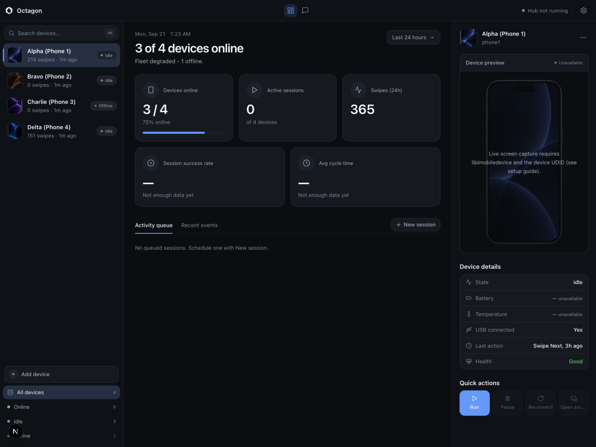

Chat dashboard
Your fleet as one conversation. Phones appear as agents, sessions and health reports land in the chat, and you can see what each phone is doing without touching it.
Local-first. Nothing leaves your Mac.
Octagon is a local-first, open-source console that turns iPhones you own into a scriptable fleet. Your Mac speaks cues aloud, and each iPhone executes them through its own Voice Control commands.
No cloud. No unofficial APIs. No jailbreak. MIT licensed.

What it is
Octagon runs entirely on your Mac. It coordinates the iPhones you already own over iOS Voice Control: the Mac says a cue like "Alpha Swipe Next", and the phone that listens for that cue executes it. What it does today:
Your fleet as one conversation. Phones appear as agents, sessions and health reports land in the chat, and you can see what each phone is doing without touching it.
The hub runs the swipe pacing sessions you queue. It restarts a crashed brain up to three times, and marks an unresponsive one degraded or offline, and a global audio lock makes sure only one phone is cued at a time.
Device health and every event are written to one local SQLite file: infra/db/farm.db. No second database, no sync service, nothing in the cloud.
Five tools over the Model Context Protocol. Claude Desktop, Claude Code or any MCP client can list phones, run sessions and read status from your fleet.
How it works
A hub on your Mac keeps one brain per phone. Each brain speaks its phone's cue through the Mac's voice, with variable, non-metronomic pacing between cues. The phone's custom Voice Control command does the rest. All of it is local: the dashboard, the hub, and one SQLite file.
Demo
The screenshots below were taken with synthetic demo data seeded by the repository. No real devices, accounts or activity are shown.
Quick start
You need a Mac and Node 20 or newer. Clone, configure, install the two workspaces:
git clone https://github.com/YannisKiefer/octagon.git
cd octagon
cp .env.example .env
npm install --prefix infra/farm
npm install --prefix apps/dashboardOptional: seed synthetic demo data, then start the dashboard:
node scripts/seed-demo.js
npm run dev --prefix apps/dashboardOpen http://localhost:3010. In development the dashboard opens without a login. A production build (npm run build && npm start) enforces authentication from .env: set DASHBOARD_ADMIN_USER and DASHBOARD_ADMIN_PASSWORD, and give NEXTAUTH_SECRET a real value:
node -e "console.log(require('crypto').randomBytes(32).toString('hex'))"Your data lives in one file, infra/db/farm.db, next to the checkout. Delete it and everything is gone. To connect real iPhones, follow the setup guide: enable Voice Control on each phone, create its custom command, plug in over USB.
MCP
Octagon ships a local MCP server over stdio. There is no network listener and no auth by design; read access is limited to the local SQLite file. Point Claude Desktop, Claude Code or any MCP client at it:
list_phonesget_phonerun_sessionget_eventsget_phone_screenidevicescreenshot, or get an explicit "unavailable" answer. Never a placeholder image.{
"mcpServers": {
"octagon": {
"command": "node",
"args": ["/absolute/path/to/octagon/mcp/server.js"]
}
}
}In Claude Desktop this goes in claude_desktop_config.json. In Claude Code you can run: claude mcp add octagon -- node /absolute/path/to/octagon/mcp/server.js
Requirements and limits
say command for cues.Privacy
All state lives in a single local SQLite file: infra/db/farm.db. Devices, health, tasks, events. Nothing leaves the machine: no telemetry, no accounts, no cloud storage. The MCP server is local stdio only. Delete the file, and everything is gone.
Download
Native app for Apple Silicon. Download the DMG, drag Octagon to Applications, and go. The dashboard, the hub, and the MCP server are all inside - no terminal required.
Download Octagon-1.1.0-arm64.dmg All releases
Unsigned build (no paid Apple certificate): the first launch needs one extra step. Open the DMG, drag Octagon to Applications, double-click it once, then allow it under System Settings - Privacy and Security - Open Anyway. After that it opens normally. Requires macOS on Apple Silicon. Prefer building it yourself? The source is the release archive.